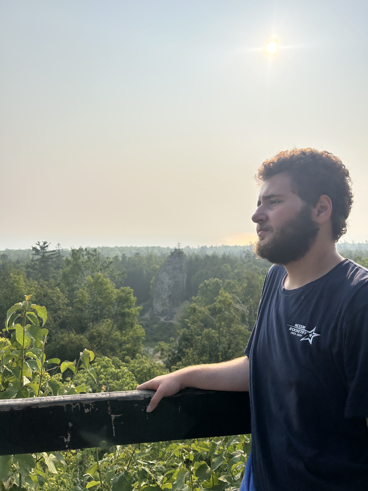

Brendan Apple
About This Website
As an undergraduate student at the University of North Carolina at Chapel Hill and graduate of North Carolina School of Science and Mathematics, I've dedicated the majority of my life to academics.
However, everyone has hobbies, and I'm no exception.
This website is a testament to those joys in my life, from drawing to programming and rocketry.
Incidentally, this has resulted in a website well suited for a portfolio, and so, it will be published under that name.

About Me
Education: Freshman at University of North Carolina at Chapel Hill and Graduate of North Carolina School of Science and Mathematics
Hobbies: Programming, Drawing, Model Rocketry, Reading, Video Games, Anime, Camping
Favorite Anime: 負けヒロインが多すぎる！(Makeine)
Favorite Book: The Ultimate Hitchhiker's Guide to the Galaxy
Favorite Games: Minecraft and Spiritfarer
Defining myself is a strange task.
It's fundamentally reductive in a way that I can't quite describe.
I'm a twin and a child of divorce, but neither fact greatly influences my life anymore.
I'm in love with programming but drawing is my oldest friend.
These facts dance with dualities to imply depth, but neither actually captures who I am.
I could dedicate more words, but they would only create the illusion of certainty where none truly exists.
That would be impossible for mere words a page.
Yet, that doesn't matter.
For, I, like everyone, am a product of what I enjoy, and that is best seen in what I create.